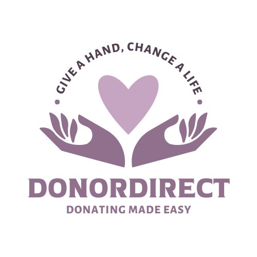

The best way to donate to your favorite charities
At DonorDirect, we believe in making giving easy, transparent, and impactful. Our platform connects generous donors with trusted charities, allowing you to directly support causes that matter most to you. Whether you’re helping provide essential supplies to children, supporting environmental efforts, or assisting local communities, DonorDirect ensures your contributions make a real difference. We aim to bridge the gap between those who want to help and organizations that need it, creating a seamless experience for donating items or funds. Join us in empowering change, one donation at a time.
Donate money to your favorite charities. You can donate once or set up a recurring donation.
Donate items to your favorite charities. You can donate once or set up a recurring donation.
Track your donations and see the impact you are making.
© 2024 DonorDirect. All rights reserved.